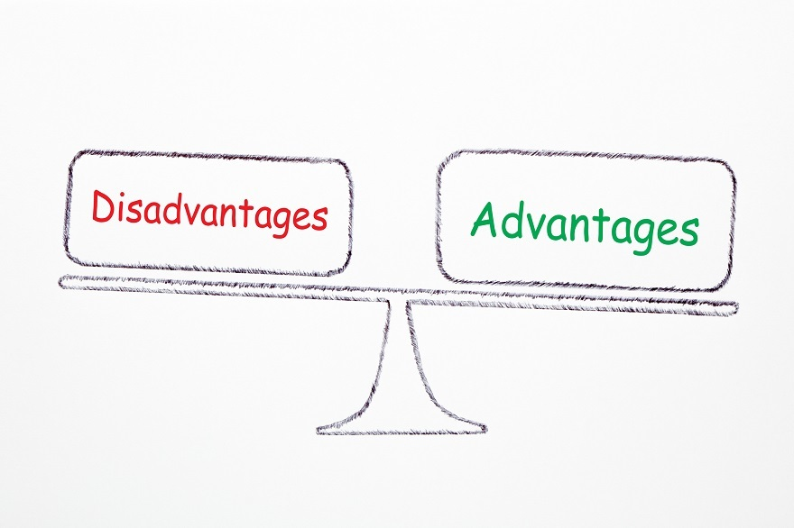

Some Disdvanatges Of Using Social Media
- Can spread information quickly to large amounts of people
- It is often used to snoop on others
- Presents a false idea of “friendship”
- Can lead to addiction
- Research has shown that it can increase feelings of depression and anxiety
- It can contribute to social isolation
- Can be used to rule out job applicants based on personal things they have posted or others have posted about them
Average time spent on Social Media (Per Day)
| 2016 |
2020 |
2023 |
| 128 minutes |
140 minutes |
170 minutes |